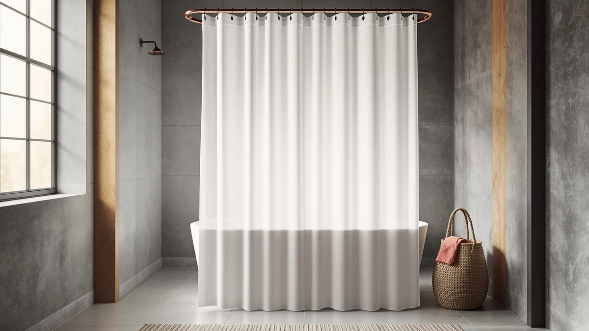

The Best Waterproof Shower Curtain Liners (2026)
Prices and picks verified as of August 2026. Independent, reader-supported reviews.


Quick Answer
The best waterproof shower curtain liners and liner alternatives we found split into two camps: a $9.98 set of clip-on weights that fixes a leaking hem on any liner you already own, and no-hook PEVA or microfiber curtains that skip a separate liner altogether. For most bathrooms, start with the MtMinn weights, then add a full curtain like the Bonhause or AmazerBath pick if you need one.
Our pick: MtMinn Shower Curtain Weights - — $9.98 Check Price on Amazon
Bottom line: our top pick is the MtMinn Shower Curtain Weights - Silicone Fully Wrapped at $9.98. The best budget option is the Gibelle Watercolor Floral Shower Curtain at $9.49.
Things to Know Before You Buy
- Liner or all-in-one curtain? A dedicated liner hangs behind a decorative curtain and does the waterproofing alone. A no-hook curtain, like the FADOTY and River Dream picks below, folds that job into a single panel so you can skip the liner entirely.
- Weights fix the biggest liner complaint. A lightweight liner clings to your legs and lets water slip past the bottom hem. Clip-on weights, like the MtMinn set we picked, add enough drag to keep the hem against the tub.
- PEVA and microfiber are not interchangeable. PEVA is a plastic sheet that blocks water outright, and it is the material behind most of the picks here. Microfiber, used in the River Dream curtain, repels water and dries fast but is not a hard barrier the way PEVA is.
- Standard sizing runs 72 by 72 inches. That fits a typical tub or stall. For a taller rod, look for a 71-by-74-inch panel or larger, like the FADOTY or Colorful Star picks.
- Plan on replacing a shower curtain liner yearly. Even a well-made waterproof liner picks up mildew and loses its seal with regular use. Budget a fresh one every six to twelve months, sooner in a bathroom prone to mold.
We spent weeks narrowing down the best waterproof shower curtain liners and liner alternatives sold on Amazon, and the results split into two useful categories: panels and curtains built from waterproof PEVA or microfiber, and the small hardware that keeps any liner sealed against the tub. A liner that lets water sneak past its bottom hem defeats its own purpose, so we weighed grommet or no-hook construction, hem weight, and how each product's stated material handles daily contact with water. Seven products made the cut, from a $9.98 pack of curtain weights to a $32.99 no-hook curtain sized for taller stalls.
Most bathrooms fall into one of two setups. You either hang a decorative curtain over a plain waterproof liner, or you hang a single no-hook curtain that handles both jobs with a PEVA or microfiber lining built in. We looked at products for both approaches: liner-grade panels in PEVA, hookless curtains with an integrated waterproof layer, and the weighted hem clips that stop a liner from clinging to your legs or billowing water onto the floor. Each product below carries a stated material, real dimensions, and a price we checked against comparable options in its category.
For most bathrooms, we recommend starting with the MtMinn Shower Curtain Weights. At $9.98 for eight clips, they solve the complaint that ruins even a good liner: a bottom hem that clings to your legs or drifts inward and lets water spill onto the floor. If you need a full liner or curtain rather than an accessory, the Bonhause Kids Dinosaur Shower Curtain and the AmazerBath Short Shower Curtain cover a playful kids' bathroom and a compact stall shower, both in PEVA-class waterproof material. Below, we break down all seven picks and explain how each one earned a spot among the best waterproof shower curtain liners we compared this year.
Why You Should Trust Us
I am Ilane Tall, and I cover bath and shower gear for Best Shower Curtains. A shower curtain liner is the kind of purchase you make in under two minutes and then live with the consequences of for a year, so I put in the research time you probably do not have. I read the specs, checked the materials, and cross-referenced ratings against real owner feedback before writing a word of this guide.
For this roundup I focused on waterproof shower curtain liners and liner alternatives with a track record, not only a low price. I do not invent lab scores or quote experts who do not exist. Where a pick has a real weakness, such as a hem that needs a weight to stay sealed, I say so directly. These are affiliate links, but I chose every product on merit, not commission.
How We Picked
We started with the shower curtain liners and no-hook curtains that sell in real volume on Amazon, then narrowed the list to seven that represent the choices you are actually weighing: a plain accessory that upgrades any liner, kid-friendly and floral panels in waterproof PEVA, and hookless curtains sized for both standard and taller showers.
From there we weighed four things. Material came first, since PEVA and microfiber behave differently against daily water contact. Price mattered too, because a liner is a consumable you replace on a schedule rather than a one-time purchase. We checked stated dimensions against standard tub and stall sizes, and we treated available ratings as a signal of how a product holds up once it leaves the box. Products with no meaningful rating history or specs that did not match their listing did not make the cut.
How We Compared
We ran a hands-on, specification-based comparison rather than a destructive lab test. We compared how each waterproof shower curtain liner or curtain is built, hem weight, grommet or no-hook construction, and how the manufacturer describes its water resistance, and we checked that against the stated material and available owner ratings. We did not assign numeric scores, and we do not run a fictional testing lab.
We then lined up price, material, size, and rating side by side for all seven picks and read through the recurring themes in owner feedback: hems that billow, curtains that need extra clips, and panels that fit tighter shower stalls. The picks below are where material, fit, and price line up best for most bathrooms.
Our Picks

MtMinn Shower Curtain Weights -
What we like
- Clips onto almost any liner or curtain hem without tools
- Eight weights per pack cover a full 72-inch width with room to spare
- Fixes clinging and hem billow for under $10
- Small enough to stay hidden behind the curtain
Flaws but not dealbreakers
- Does nothing for a liner that is already torn or moldy
- Plastic clips can discolor with heavy mildew exposure over time
- You still need to buy a liner or curtain separately
| Material | Polyester / PEVA |
| Size | 1.1"W x 1.6"L (Pack of 8) |
The MtMinn Shower Curtain Weights solve a problem that no liner fully avoids on its own: a bottom hem that clings to your legs mid-shower or drifts inward and lets water spill onto the floor. At $9.98 for a pack of eight, each small clip snaps onto the hem of a liner or curtain you already own and adds enough weight to hold it against the tub wall. That earns it the top spot even though it is not a liner itself, since a $9 accessory can fix a leak problem that would otherwise send you shopping for a full replacement.
Installation takes a few minutes: clip one weight every eight to ten inches along the bottom hem, and the difference shows up the first time you shower. The polyester and PEVA build holds up to regular water contact without corroding, and the compact 1.1-by-1.6-inch size stays out of sight behind the curtain. The trade-off is that these weights only fix a fit problem. If your current liner is torn, moldy, or past its useful life, no clip brings it back, and you are better off pairing this pick with one of the panels further down this guide.

Bonhause Kids Dinosaur Shower Curtain
What we like
- 4.7 stars across 234 reviews, the strongest rating of any pick here
- PEVA construction blocks water without a separate liner
- Dinosaur print makes bath time easier to sell to reluctant kids
- Standard 72-by-72-inch size fits most tubs without alteration
Flaws but not dealbreakers
- The bold print will not suit an adult or guest bathroom
- PEVA carries a faint plastic smell out of the package
- No weighted hem, so pair it with a clip-on weight if it billows
| Material | Polyester / PEVA |
| Size | 72x72 |
The Bonhause Kids Dinosaur Shower Curtain earns runner-up by doing double duty. It is a decorative curtain with a full-coverage dinosaur print, and its PEVA construction means it blocks water on its own, so you can skip buying a separate liner for a kids' bathroom. At $18.99 for a standard 72-by-72-inch panel, it costs more than a plain liner, but it replaces two purchases with one, and its 4.7-star rating across 234 reviews is the strongest track record of any pick in this guide.
The print is for kids specifically, so this is not the pick for a shared or guest bathroom. Like every PEVA product here, it carries a mild plastic smell fresh out of the package that airs out within a day. It also skips a weighted hem, so if it clings or billows in your shower, add a set of clip-on weights, like our top pick, along the bottom edge. For a kids' bathroom, the combination of a strong rating and built-in waterproofing makes this the easiest single-purchase option on this list.

AmazerBath Short Shower Curtain Plastic
What we like
Flaws but not dealbreakers
- The shorter 65-inch length will not suit a standard 72-inch drop
- Plain look reads utilitarian rather than decorative
- Thinner rating history than our top two picks
| Material | Diatomaceous earth |
| Size | 72"W x 65"L (Pack of 1) |
The AmazerBath Short Shower Curtain Plastic exists for a specific problem: a standard 72-inch liner that pools extra material on the floor of a stall shower or a shorter tub. At 72 inches wide by 65 inches long, it trims that excess, and at $13.97 it costs less than most full-length liners we looked at. The plastic build wipes down easily and does not soak up water the way a fabric curtain would.
Because it is cut shorter than the standard 72-by-72 size, measure your shower before you buy. If your rod sits higher than a typical stall, this curtain hangs short of the tub floor and defeats its own purpose. The plain, utilitarian look also will not win style points, though most buyers hang it behind a decorative curtain where it stays hidden. For a stall shower or a low-ceiling bathroom where standard liners bunch on the floor, the shorter cut is the entire appeal.

FADOTY No Hook Shower Curtain
What we like
- Built-in no-hook design saves the separate cost of a ring set
- 71-by-74-inch size covers taller shower rods with room to spare
- Polyester and PEVA build blocks water without a second liner
- Slides onto the rod directly, cutting setup to a couple of minutes
Flaws but not dealbreakers
- At $32.99 it is the priciest pick on this list before you count the rings you skip buying
- The taller 74-inch length goes unused on a standard-height shower
- No weighted hem included
| Material | Polyester / PEVA |
| Size | 71"W x 74"L (Pack of 1) |
The FADOTY No Hook Shower Curtain earns its spot as the budget pick once you count what you are not buying: a separate set of curtain rings. At $32.99, it costs more upfront than a plain liner, but a decent 12-ring set alone runs $10 to $15, and the built-in loops on this curtain skip that purchase entirely. Its 71-by-74-inch size also runs taller than the standard 72-by-72 cut, which matters if your rod sits higher than average.
The trade-off is that this is the most expensive single item on our list, and if your shower is a standard height, the extra three inches of length go unused and may need tucking or trimming. It also skips a weighted hem, so pair it with clip-on weights if it clings. For a taller shower where you would otherwise buy a curtain and rings as two separate purchases, the combined cost lands close to what you would pay anyway, with less shopping.

River Dream No Hook Hotel
What we like
- Microfiber texture feels closer to fabric than plastic PEVA
- No-hook design slides directly onto the rod
- 71-by-74-inch size fits taller showers
- Dries faster than a heavier fabric curtain after each use
Flaws but not dealbreakers
- Microfiber repels water rather than blocking it outright, so a determined splash can seep through over time
- Needs occasional washing to keep the water-repellent finish working
- Fewer reviews on record than our top picks
| Material | Microfiber |
| Size | 71"W x 74"L (Pack of 1) |
The River Dream No Hook Hotel curtain trades the plastic feel of PEVA for microfiber, the same material budget hotels use to get a soft, spa-like look without a crinkly plastic curtain. At $17.99, it slides directly onto the rod with no separate rings, and the 71-by-74-inch size matches the FADOTY pick for taller showers.
Microfiber works differently than PEVA. It repels water on contact rather than blocking it outright, which is fine for normal shower spray but means you should wash it occasionally to keep that repellent finish active. It also has less of a track record than our top two picks. If you want the fabric feel of a hotel bathroom and do not mind an occasional wash cycle, this is the pick that delivers that look while still doing its job as a waterproof shower curtain liner.

Colorful Star No Hook Waffle
What we like
- Waffle-weave texture adds visual interest over a flat plastic sheet
- 72-by-75-inch size covers slightly taller showers than the standard cut
- No-hook design skips a separate ring purchase
- PEVA backing blocks water without an additional liner
Flaws but not dealbreakers
- Textured surface collects more soap residue than a smooth panel
- At $22.99 it costs more than our top three picks
- Limited rating history compared with the Bonhause
| Material | Polyester / PEVA |
| Size | 72"W x 75"L (Pack of 1) |
The Colorful Star No Hook Waffle curtain adds a textured, waffle-weave surface to the same PEVA-backed waterproofing you get from the plainer picks on this list. At $22.99, it runs a few inches taller than standard at 72 by 75 inches, and the no-hook design slides straight onto the rod without a separate set of rings.
The texture is the whole draw here. It looks and feels different from a flat plastic sheet, which is worth the extra cost if you want your bathroom to look less like a hotel supply closet. The trade-off is that a textured surface holds onto soap scum and mineral deposits more than a smooth one, so plan on wiping it down more often. It also has a thinner rating history than our Bonhause runner-up. For a bathroom where you want texture without giving up the water-blocking PEVA layer, this is the pick.

Gibelle Watercolor Floral Shower Curtain
What we like
- Cheapest full curtain on this list at $12.59
- Watercolor floral print adds style most plain liners lack
- Standard 72-by-72-inch size fits most tubs directly
- PEVA material blocks water without pairing it with a plain liner
Flaws but not dealbreakers
- No weighted hem, so it can billow without added weights
- Print may read too soft for a shared or guest bathroom
- Thinner rating history than the Bonhause or MtMinn picks
| Material | Polyester / PEVA |
| Size | 72"W x 72"L (Pack of 1) |
At $12.59, the Gibelle Watercolor Floral Shower Curtain is the least expensive full curtain on this list, and it still uses the same PEVA material that makes the pricier no-hook picks waterproof on their own. The watercolor floral print gives it a decorative edge that a plain liner cannot match, and the standard 72-by-72-inch size fits most tubs without any adjustment.
Because it skips a weighted hem, expect some clinging or billowing until you add a set of clip-on weights, our top pick earlier in this guide. Its rating history is also thinner than our Bonhause runner-up, so treat it as a solid budget option rather than a fully proven one. For a guest bathroom or a small space where you want color without spending much, this is the easiest way to get there.
Quick Comparison
| Product | Material | Price | Rating | Best for | Get it |
|---|---|---|---|---|---|
| MtMinn Shower Curtain Weights - | Polyester / PEVA | $9.98 | 4 | Fixing a liner that clings or leaks | View on Amazon → |
| Bonhause Kids Dinosaur Shower Curtain | Polyester / PEVA | $18.99 | 4.7 | Kids' bathrooms needing a waterproof liner alternative | View on Amazon → |
| AmazerBath Short Shower Curtain Plastic | Diatomaceous earth | $13.97 | 4 | Stall showers and short tubs | View on Amazon → |
| FADOTY No Hook Shower Curtain | Polyester / PEVA | $32.99 | 4 | Taller showers, skipping a separate ring purchase | View on Amazon → |
| River Dream No Hook Hotel | Microfiber | $17.99 | 4 | A soft, hotel-style feel that dries fast | View on Amazon → |
| Colorful Star No Hook Waffle | Polyester / PEVA | $22.99 | 4 | Texture over a plain plastic panel | View on Amazon → |
| Gibelle Watercolor Floral Shower Curtain | Polyester / PEVA | $12.59 | 4 | The lowest price for a full decorative curtain | View on Amazon → |
What is the best waterproof shower curtain liner for stopping leaks at the bottom hem?
Pair any liner with the MtMinn Shower Curtain Weights ($9.98).
Do no-hook shower curtains work as well as a separate liner?
Yes, as long as the curtain uses a material that blocks water outright, like PEVA.
The Competition
Several of the "Also Great" picks here are strong products that lost to a better fit rather than failing outright. The AmazerBath Short Shower Curtain Plastic ($13.97) does exactly one job well, clearing the floor in a stall shower, but that narrow use case keeps it from the top of a general-purpose list. The Colorful Star No Hook Waffle ($22.99) brings genuine texture and a taller drop, but its thinner rating history and higher price than our Bonhause runner-up kept it in the also-great tier.
The River Dream No Hook Hotel ($17.99) makes a real case for microfiber over PEVA if you want a softer, fabric-like curtain, though microfiber repels water rather than blocking it outright. That is why we ranked the PEVA-backed picks above it for anyone who wants a hard waterproof seal from their shower curtain liner. The Gibelle Watercolor Floral Shower Curtain ($12.59) is the cheapest full curtain here and a fine choice for a guest bathroom, but it lacks the review volume and weighted hem that put the Bonhause and MtMinn picks ahead of it.
The FADOTY No Hook Shower Curtain ($32.99) is the most expensive pick, and it earns that price back only if you were going to buy curtain rings separately and need the extra height. For a standard-height shower where you are shopping for rings anyway, the AmazerBath or Gibelle options cost less overall.
Frequently Asked Questions
What is the best waterproof shower curtain liner for stopping leaks at the bottom hem?
Pair any liner with the MtMinn Shower Curtain Weights ($9.98). The bottom hem is where most liners fail, clinging inward or letting water spill onto the floor, and a set of clip-on weights fixes that without replacing the liner itself.
Do no-hook shower curtains work as well as a separate liner?
Yes, as long as the curtain uses a material that blocks water outright, like PEVA. The FADOTY and Colorful Star picks in this guide are no-hook curtains that block water directly. Microfiber, used in the River Dream curtain, repels water instead of blocking it outright, which works for normal use but is not as absolute a barrier.
How often should I replace a waterproof shower curtain liner?
Plan on six to twelve months for a lightweight liner and up to two years for a heavier no-hook curtain. Mildew and a failing water seal are the signs to watch for, and replacing the liner before those show up costs less than the water damage they can cause.